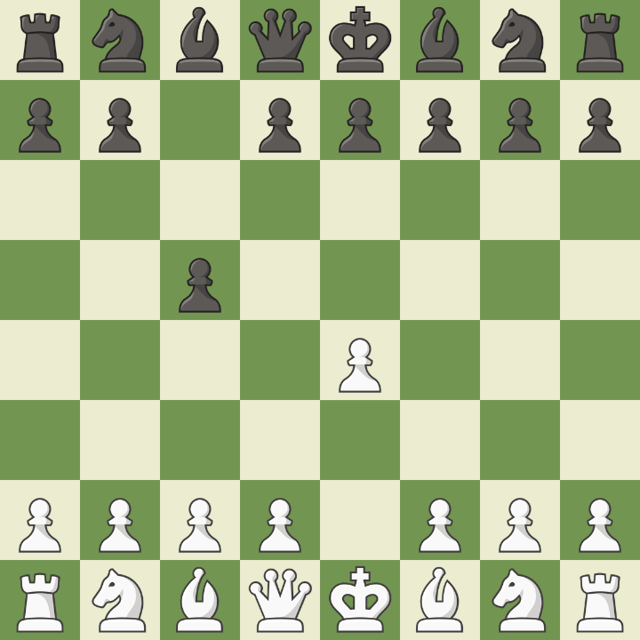

Francesa
Começa com 1.e4 e6. As pretas preparam d5 para desafiar o centro branco. É uma abertura sólida, baseada em estrutura de peões firme e jogo estratégico, mas que pode resultar em posições fechadas.
